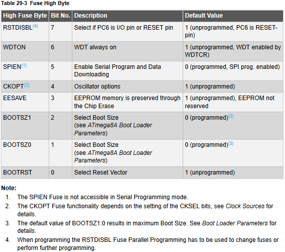
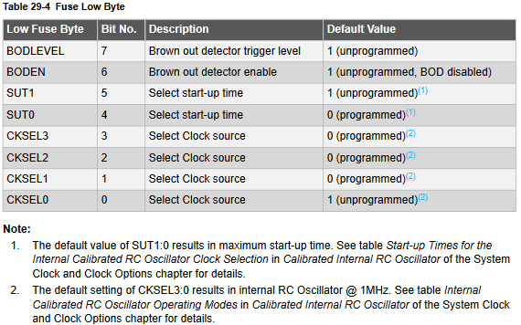

FUSES:
Старшие фьюзы (пример из datasheet для atmega8a):

Младшие фьюзы:

AVRDUDE
Программируем кристалл командой avrdude с соответствующими ключами:
avrdude -c USBasp -p atmega8 -b19200 -U flash:w:'/home/phara/AVR/C PROJs/m8_prog/Debug/m8_prog.hex'
Options:
-p <partno> Required. Specify AVR device.
-b <baudrate> Override RS-232 baud rate.
-B <bitclock> Specify JTAG/STK500v2 bit clock period (us).
-C <config-file> Specify location of configuration file.
-c <programmer> Specify programmer type.
-D Disable auto erase for flash memory
-i <delay> ISP Clock Delay [in microseconds]
-P <port> Specify connection port.
-F Override invalid signature check.
-e Perform a chip erase.
-O Perform RC oscillator calibration (see AVR053).
-U <memtype>:r|w|v:<filename>[:format]
Memory operation specification.
Multiple -U options are allowed, each request
is performed in the order specified.
-n Do not write anything to the device.
-V Do not verify.
-u Disable safemode, default when running from a script.
-s Silent safemode operation, will not ask you if
fuses should be changed back.
-t Enter terminal mode.
-E <exitspec>[,<exitspec>] List programmer exit specifications.
-x <extended_param> Pass <extended_param> to programmer.
-y Count # erase cycles in EEPROM.
-Y <number> Initialize erase cycle # in EEPROM.
-v Verbose output. -v -v for more.
-q Quell progress output. -q -q for less.
-? Display this usage.
Просто стереть кристалл:
avrdude -c USBasp -p atmega8 -b19200 -e
Прочитать EEPROM:
avrdude -c USBasp -p atmega8 -U eeprom:r:'/home/phara/AVR/C PROJs/name_of_project_folder/eeprom.raw':r
Записать в EEPROM:
avrdude -c USBasp -p atmega8 -U eeprom:w:'/home/phara/eeprom.hex'
Прочитать FUSE в формате HEX:
avrdude -c USBasp -p atmega8 -U hfuse:r:'/home/phara/AVR/hfuse.txt':h -U lfuse:r:'/home/phara/AVR/lfuse.txt':h
Записать FUSE:
avrdude -c USBasp -p atmega8 -U lfuse:w:0xE1:m -U hfuse:w:0x99:m